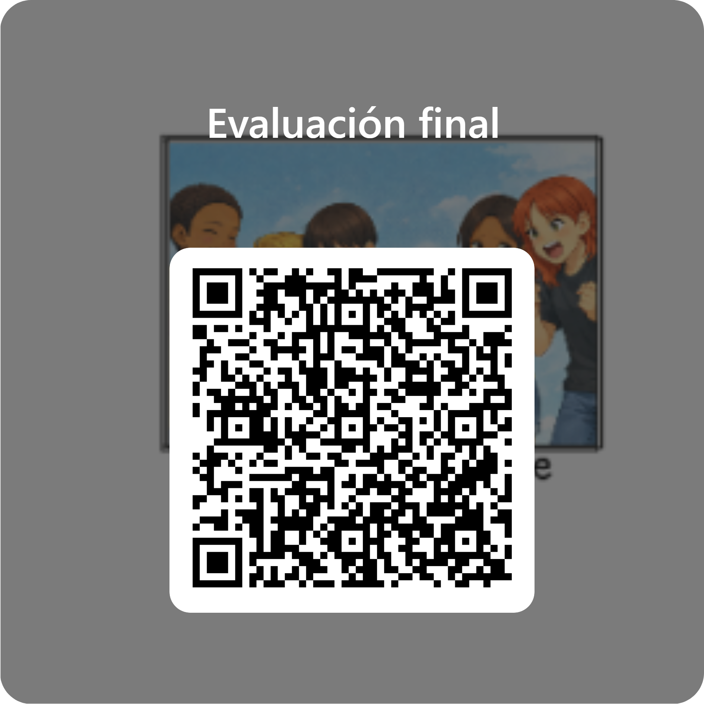

Enlace al cuestionario evaluación final.

Enlace al cuestionario evaluación final.

| Criterios | 4. Excelente | 3. Adecuado | 2. En proceso | 1. Necesita ayuda |
| 1.-Identificación de emociones propias | Reconoce claramente cómo se siente en distintas situaciones. |
Reconoce algunas emociones cuando se le pregunta. |
A veces identifica cómo se siente | Tiene dificultad para reconocer sus emociones. |
|
2.-Identificación de emociones en otras |
Reconoce fácilmente emociones en compañeros, personajes o imágenes. |
Reconoce algunas emociones en los demás. | Le cuesta identificar emociones en otros. | No identifica emociones en otras personas. |
|
3.-Expresión de emociones |
Expresa sus emociones con palabras, dibujos o gestos de forma clara. | Expresa algunas emociones cuando se le anima. | Expresa pocas emociones o con dificultad. | No expresa cómo se siente. |
| 4.-Regulación emocional | Utiliza estrategias para calmarse (respirar, hablar, pedir ayuda). |
A veces intenta controlar sus emociones con ayuda. |
Tiene dificultades para controlar emociones intensas. |
Reacciona impulsivamente y necesita mucha ayuda. |
| 5.-Empatía | Comprende cómo se sienten los demás y muestra apoyo. |
A veces se pone en el lugar de los demás. |
Le cuesta comprender las emociones de otros. |
No muestra empatía hacia sus compañeros. |
| 6.-Resolución de conflictos | Intenta solucionar problemas hablando y buscando acuerdos. |
Acepta ayuda para resolver conflictos. | Necesita mucha guía para resolver problemas. |
No intenta resolver conflictos o responde con enfado. |
| 7.-Respeto y convivencia | Respeta turnos, opiniones y emociones de los demás. |
Generalmente respeta a los compañeros. |
A veces muestra conductas poco respetuosas. |
No respeta normas de convivencia emocional. |
| 8.-Participación en las actividades | Participa activamente en juegos, cuentos y dinámicas del proyecto |
Participa en la mayoría de actividades. |
Participa poco o solo cuando se le anima. |
Apenas participa en las actividades. |
Obra publicada con Licencia Creative Commons Reconocimiento Compartir igual 4.0